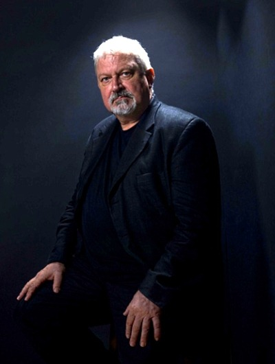

Milyen izgalmas lenne, ha az őseink össze tudásával rendelkezhetnénk? Az Assassin’s Creed világában ez lehetséges. Egy új technológia segítségével kutathatjuk föl, hogy alakította és hogyan befolyásolja most is az emberiség sorsát egy titok háború. Ha szereted a science-fiction-t és erős a idegzeted ez neked való.

Anton Gill (művészevén Oliver Bowden)
Pár szó az írókról
Az Assassin’s Creed sorozat több író nevéhez is köthető. Mindekek előtt meg kell említeni, hogy az Oliver Bowden egy művésznév, ami alatt előrször Anton Gill, később Andrew Holmes írta tovább a sorozatot. További írói a sorozatnak Christine Golden, Matthew Kibry és Gordon Doherty.
Anton Gill ( Oliver Bowden ) 1948-ban született Illford-ban, Angliában. Az egyesült királyságban végzett középiskolát és egyetemet. Tizenöt év szíház után hivatásosan kezdett el írni történelmi valős és kitalált törtétneteket. Neki köszönhetjük az Assassin’s Creed könyvek legjobb törtétetét, az Ezio trilógiát (Reneszánsz, Testvériség, Jelenések).
Andrew Holmes (Oliver Bowden) britt író folytatta Anton Gill munkásságát. Az Assassins’s Creed könyvek többésge tőle származik. Ide vehető címek: A titkos keresztes háború, Árulás, Feket lobógó, Egység, Alvilág, Sivatagi eskü.
Christine Golden 1963 november 21-én született. Az amerikai írónő főként a fantatsztikus, horror és a science fiction témakörében írt regényeket és több novellát is. Ő írta az Eretnekség című kötetet, illetve a filmeregényt.
Mattew J. Kibry 1976 január 28-ban az amerikai Utah-ban szültett. Itt járt egyetemre, ahol iskola pszichológusi diplomát végzett. Számos gyerek könyvet írt, de hozzá köthető az The Last Descendant trilógia és a Valhalla című könyvek.
Gordon Doherty skót születésű regényíró. Főként ként a klasszikus antikvitás témákában munkálkodik. Az ő nem évhez kapcsolódik az Odisszea történetének megalkotása.
Ha még nem hallottál az Assasin’s Creedről
Az emberek előtt a egy sokkal magasabbredű faj élt a világban. Ez a létforma sajnos eltünt, de néhány erekjét hátrahagya lehetőséget adott az embereknek arra, hogy megfejtsék a szabad akarat titkát. Mondanom sem kell mekkora hatalmat jelentenek ezek a tárgyak. A történelem folyamán két csoport, a Templomosok és Orgyilkosok rendje, kezdett háborúba, mialatt az erekjéket elrejtették. A jelenben egy új technológia segítségével elérhetjük az őseink emlékeit. Ennek segítségével próbáljuk megkereseni az erekjéket és végetvetgni a háborúnak.
„Csak akkor igazi a győzelem, ha teljes.”
Oliver Bowden
A két rend
A háborúban az egymással szem ben álló frakciók az Templomosok Rendje és az Orgyilkosok Testvérisége. Habár az eszméik már az ókortól kezdve éltek, két csoport a keresztes háborúk idején alakultak meg.
A Keresztes lovagok alapították meg a Templomosok rendjét, hogy az elveszett Szentgrál megtalálásának szenteljék az életüket, ugyanis a Grál tartalmazza a szabad akarat titkának kulcsát. Ha sikerül megszerezniük, akkor a szabad akarat eltörlésével végetvethetnek az emberi agressziónak, ezzel örökre megszünnének a háborúk.
Mindigis voltak olyanok, akik a szabad akarat híve voltak. Az assassin-ok, orgyilkosok testvérisége ezeket az embereket fogta össze. Megtanulták hogyan maradjanak észrevétlenek, hogyan öljenek gyorsan és probléma nélkül. Az ő céljuk, hogy a templomosok előtt megszerezzék a különleges erővel bíró erekjét, hogy ezzel megakadályozzák a rend viláturalmát. Bármi áll is az útjukba, nem hagyhatják elvenni az emberiség szabadságát, mégha ezért ölniük is kell. Mottójuk:
A táblázatban a könyvek alap adatait tüntetjük fel (író, cím és borítókép). A felsorolás a történet és a kronológia sorrendjét követi.
Író
Cím
Borító
Oliver Bowden
A titkos keresztes háború
Súgó
A táblázatban a könyvek alap adatait tüntetjük fel (író, cím és borítókép). A felsorolás a történet és a kronológia sorrendjét követi.
Oliver Bowden
Reneszánsz
Oliver Bowden
Testvériség
Oliver Bowden
Jelenések
Súgó
A táblázatban a könyvek alap adatait tüntetjük fel (író, cím és borítókép). A felsorolás a történet és a kronológia sorrendjét követi.
Mattew J. Kibry
The Last Descendant A New York-i felkelés
Mattew J. Kibry
The Last Descendant A kán sírja
Mattew J. Kibry
The Last Descendant Az istenek végzete
Önálló kötetek
Súgó
A táblázatban a könyvek alap adatait tüntetjük fel (író, cím és borítókép). A felsorolás a történet és a kronológia sorrendjét követi.
Oliver Bowden
Origins Sivatagi eskü
Gordon Doherty
Odisszea
Mattew J. Kibry
Geirmund Sagája Valhalla
Christine Golden
Eretnekség
Christine Golden
Assassin’s Creed (Hivatalos filmregény)
Oliver Bowden
Fekete lobogó
Oliver Bowden
Árulás
Oliver Bowden
Egység
Oliver Bowden
Alvilág
Játék, majd Könyv és Film
Az Assassin’s Creed esetében, nem úgy mint például a The Witchernél, a videójáték megelőzte a könyveket. A még ma is nagy rajongótábornak örvendő videójáték-sorozat sikeressége miatt, a játékok történetét könyv formátumban is kiadták. Ez a könyvsorozat elég sok kötetből áll, de ez ne tántorítson el senkit. A könyvek alapvetően egymástól függetlenek, de előfordul közte néhány trilógia is. Ami a mozi vásznat illeti, készült film adaptáció 2016-ban, ami szintén önálló tröténetet dolgoz fel. Habár ezt hatalmas csalódás megnézni, a belőle készült könyv megér egy próbát.
Hangulat és tanulság
Az Assassin’s Creed egy izgalmas kémtörténet. Van benne kincsvadászat, lopakodás, tolvajlás, likvidálás és mindezt egy egyedi környezetben. A könyvekben ugyan nem mindíg van benne, de az események két idősíkon folynak egyszerre. A jelen modern világban és a múlt emlékeiben (történelmi korokban). A macska-egér játék folyamatosan fentartja a figyelmünket. Mindemellet komoly erkölcsi kérdések merülnek fel, minden alkalommal. A hatalom kérdésköre. Van jogos gyikosság? A szabad önrendelkezés-e az emberi agresszió forrása?